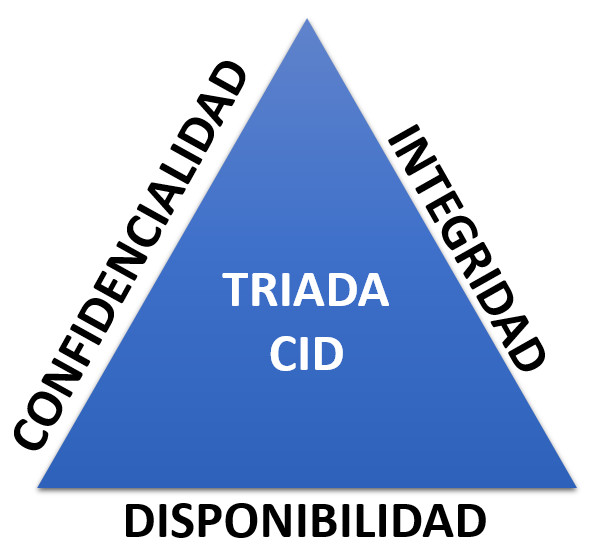

La Triada CID (Confidencialitat, Integritat, Disponibilitat) en postgresql

La triada CID (Confidencialitat, Integritat i Disponibilitat) és un model de seguretat fonamental per garantir la protecció de la informació en qualsevol sistema informàtic, inclòs postgresql. Aquest model es fa servir per establir les bases de les polítiques de seguretat, i postgresql, com a sistema de gestió de bases de dades (SGBD), té diverses característiques i eines que permeten implementar-lo eficaçment.
1. Confidencialitat (Confidentiality)
La confidencialitat es refereix a la protecció de la informació per evitar que sigui accedida per usuaris no autoritzats. A postgresql, això es pot aconseguir mitjançant:
- Autenticació i control d'accés: postgresql utilitza sistemes d'autenticació com l'usuari/contrassenya per garantir que només els usuaris autoritzats puguin accedir a la base de dades.
- Privilegis i rols: Els rols i privilegis d'postgresql defineixen els drets d'accés de cada usuari a les dades. Els privilegis poden ser assignats a rols específics i aquests rols assignats als usuaris.
- Xifrat de dades (Encryption): postgresql permet xifrar tant les dades en repòs com les dades en trànsit. La funció de xifrat de bases de dades d'postgresql (TDE - Transparent Data Encryption) xifra les dades emmagatzemades, mentre que el xifrat SSL/TLS s'utilitza per protegir les dades durant la transmissió.
- Auditoria: postgresql ofereix eines per auditar l'accés a la base de dades i registrar les operacions realitzades. Això permet detectar accés no autoritzat a dades sensibles.
2. Integritat (Integrity)
La integritat de les dades fa referència a la seva exactitud, coherència i fiabilitat al llarg del temps. Per garantir-la en postgresql, es poden utilitzar diversos mecanismes:
- Restriccions (Constraints): postgresql permet definir restriccions per garantir la coherència de les dades (per exemple, restriccions de clau primària, clau forana, unicitat i validesa).
- Comprovació de validesa (Validations): Es poden utilitzar triggers o funcions per validar les dades abans d'introduir-les a la base de dades. Això ajuda a mantenir la qualitat i la integritat de la informació.
- Control de versions i còpies de seguretat: Les còpies de seguretat regulars i el control de versions ajuden a garantir que les dades puguin ser recuperades de manera fiable en cas de pèrdua o corrupció.
- Controls de transaccions (ACID): postgresql utilitza el model ACID (Atomicitat, Consistència, Aïllament, Durabilitat) per assegurar-se que les transaccions són processades correctament i no alteren la integritat de les dades.
3. Disponibilitat (Availability)
La disponibilitat fa referència a la capacitat de la base de dades per estar accessible i operativa en tot moment. Per assegurar la disponibilitat en postgresql, es poden utilitzar diversos mecanismes i tecnologies:
- Clústers i alta disponibilitat: postgresql suporta diverses solucions d'alta disponibilitat, com postgresql Real Application Clusters (RAC), que permeten que múltiples instàncies de bases de dades treballin en conjunt per garantir que la base de dades estigui sempre disponible, fins i tot en cas de fallades del sistema.
- Recuperació davant de desastres (Disaster Recovery): postgresql ofereix opcions de recuperació davant de desastres, com postgresql Data Guard, que permet replicar les dades en un lloc secundari per garantir que la base de dades estigui disponible en cas d'incidents importants.
- Còpies de seguretat i restauració: Utilitzar postgresql Recovery Manager (RMAN) per realitzar còpies de seguretat i restaurar les dades és essencial per garantir la disponibilitat dels serveis.
- Manteniment i monitorització: postgresql proporciona eines per monitoritzar la salut del sistema (postgresql Enterprise Manager) i per planificar el manteniment, per evitar aturades no desitjades i per identificar de manera proactiva possibles problemes de disponibilitat.
Resum
Implementar la triada CID en postgresql implica la combinació de múltiples mecanismes i eines que permeten protegir la informació:
- Confidencialitat: Autenticació, xifrat de dades, control d'accés i auditoria.
- Integritat: Restriccions de dades, control de transaccions i còpies de seguretat.
- Disponibilitat: Alta disponibilitat, recuperació davant de desastres i monitorització activa.
Amb aquests mecanismes, postgresql permet als administradors de bases de dades protegir les dades i garantir que es compleixin les pràctiques de seguretat requerides per a una bona gestió de la informació.
👤 Usuaris en Postgresql
Els usuaris permeten configurar el mecanisme de Confidencialitat, Identificant (nom d'usuari), autenticant (amb password, per exemple) i restringint l'accés a dades no permeses (amb els privilegis)
Què és un usuari?
Un usuari Postgresql identifica una entitat que accedeix a la base de dades. Pot representar una persona, aplicació o procés.
🔐 Autenticació d'usuaris
Es configura en fitxer pg_hba.conf
- Local: usuari amb credencials dins de la base de dades. md5, scram-sha-256
- peer, ldap, gss, sspi, pam: validació per S.O., LDAP, Kerberos, Radius
L’autenticació es defineix per mètodes configurats al fitxer pg_hba.conf
Tipus d'usuaris
- Predefinits: postgres , l'administrador del SGBD. "S'ha de protegir i intentar no usar"
- En instància: definits dins d'una instància
Els usuaris (roles) es creen a nivell de tota la instància. Un usuari pot connectar-se a qualsevol base de dades (si té permisos)
Creació, modificació i baixa d'usuaris
-- Crear usuari (cas més usual)
CREATE USER alumne WITH PASSWORD '1234';
CREATE USER profe WITH PASSWORD 'abc123' CREATEDB CREATEROLE;
-- CREATEDB → pot crear bases de dades
-- CREATEROLE → pot crear altres usuaris
-- Modificar contrasenya
ALTER USER ausias WITH PASSWORD 'nova_pass';
-- Eliminar usuari
DROP USER alumne;
DROP ROLE alumne;
-- Borra usuari i tots els objectes del seu schema
DROP USER ausias;
-- Donarà error si ausias te objectes o sessions obertes
⚠️ Important : No pots eliminar un usuari si: Té objectes (taules, esquemes…) o Té sessions actives
-- Cal fer primer..
SELECT pg_terminate_backend(pid) FROM pg_stat_activity
WHERE usename = 'alumne' AND pid <> pg_backend_pid();
REASSIGN OWNED BY alumne TO altre_user;
DROP OWNED BY alumne;
DROP USER alumne;
-- Crear rol, ==> equivalent a crear usuari CREATE ROLE alumne LOGIN PASSWORD '1234'; -- LOGIN indica que pot iniciar sessió
🔑 Donar permisos de connexió
Depèn de com es cree, un usuari podrà connectar o no..
CREATE USER alumne WITH PASSWORD '1234'; -- pot connectar CREATE ROLE alumne LOGIN PASSWORD '1234'; -- pot connectar, perquè té el LOGIN CREATE ROLE app_role NOLOGIN; -- no pot connectar GRANT CONNECT ON DATABASE escola TO alumne;
Encara que: Quan es crea una base de dades nova, per defecte es fa un
GRANT CONNECT ON DATABASE nom_bbdd TO PUBLIC;
Això significa que qualsevol usuari pot connectar encara que no se li donen permisos explícits de
GRANT CONNECT ON DATABASE .. TO ..
Si es desitja que, per defecte, cap usuari puga connectar a una BBDD, s'ha de revocar el permís després de crear-la
amb, REVOKE CONNECT ON DATABASE escola FROM PUBLIC;, i sols donar permís als usuaris concrets amb
GRANT CONNECT ON DATABASE escola TO usuari;
🔍 Consultes útils
-- Usuaris existents
SELECT rolname, rolcanlogin, rolvaliduntil FROM pg_roles;
-- Esquema actiu
SELECT current_user;
-- o
SELECT session_user;
-- Paràmetres d'usuaris administratius
SELECT rolname FROM pg_roles WHERE rolsuper = TRUE;
Connexió
psql -U system -h localhost -d escola
usu lloc bbdd
Vistes relacionades amb usuaris
pg_roles
Bones pràctiques
- Canviar contrasenyes predefinides
- No usar usuari postgres per a operacions del dia a dia
schema
A PostgreSQL, totes les taules han d’estar dins d’un esquema, i per defecte els usuaris treballen a l’esquema PUBLIC.
Un schema en PostgreSQL (i en molts altres SGBD) es pot entendre com un directori o carpeta dins d’una base de dades:
Quan es crea una bbdd , es crea una carpeta "public", on el propietari té accés concedit
El propietari del schema public és el mateix usuari que crea la base de dades. Aquest usuari té permisos de CREATE, USAGE dins del schema, per tant pot crear taules immediatament.
-- Crear un esquema addicional... CREATE SCHEMA schema1 AUTHORIZATION user1;
-- Accés a objectes d'un schema SELECT * FROM schema1.taula; -- Per evitar posar schema1. SET search_path TO schema1; -- I després.. SELECT * FROM taula;
Per defecte, postgres fa
GRANT ALL ON SCHEMA public TO postgres; -- per defecte a l’usuari que crea la base de dades GRANT CREATE, USAGE ON SCHEMA public TO PUBLIC;
Bones pràctiques
REVOKE CREATE ON SCHEMA public FROM PUBLIC; CREATE SCHEMA pepe AUTHORIZATION pepe;
Què és PUBLIC?
PUBLIC no és un usuari real, ni es pot loguejar. És un rol especial virtual que inclou tots els usuaris existents i futurs de la base de dades. Serveix per donar permisos generals a tothom sense haver d’assignar-los un a un.
Encara que, en moltes instal·lacions recents (especialment a PostgreSQL ≥ 14, i en sistemes Linux amb paquets de distribució) el CREATE sobre public s’ha revocat per defecte per seguretat:
Saber quins permisos te PUBLIC
\dn+
Crear un usuari operatiu
CREATE USER nom_usuari WITH PASSWORD 'contrasenya'; -- Crear usuari GRANT CONNECT ON DATABASE nom_bd TO nom_usuari; -- Permetre connectar a BBDD \c nom_bd -- situar-se en la BBDD GRANT USAGE ON SCHEMA public TO nom_usuari; GRANT SELECT, INSERT, UPDATE, DELETE ON ALL TABLES IN SCHEMA public TO nom_usuari; -- per a taules existents ALTER DEFAULT PRIVILEGES IN SCHEMA public GRANT SELECT, INSERT, UPDATE, DELETE ON TABLES TO nom_usuari; -- per a taules futures GRANT CREATE ON SCHEMA public TO nom_usuari; -- Si es vol que cree taules noves....s
Permisos CREATE i USAGE
-- Donar permís d’usar el schema a l’usuari GRANT USAGE ON SCHEMA aula TO pepe; -- Donar permís de crear objectes el schema a l’usuari GRANT CREATE ON SCHEMA aula TO pepe;
USAGE permet “fer servir” un objecte, però no permet modificar-lo ni crear dins seu. S’aplica principalment a schemas, sequences i tipus.
CREATE permet crear nous objectes dins d’un schema: taules, vistes, funcions, etc.
Per crear objectes dins d’un schema, cal tenir USAGE + CREATE
Només USAGE → pots llegir/consultar objectes amb permisos, però no crear res
Només CREATE → no té sentit, perquè sense USAGE no pot referenciar el schema
🔐 Bloquejar Usuaris en postgresql , i.. ¿¿ Forçar a Canviar Contrasenya??
Un usuari bloquejat NO POT accedir al sistema i no pot canviar el estat per si mateix. Ho ha de sol·licitar al DBA
1. Bloquejar / desbloquejar un Usuari en postgresql
ALTER ROLE omar NOLOGIN; -- Bloqueig compte ALTER ROLE omar LOGIN; -- Desbloqueig compte
PostgreSQL no té període de gràcia ni avisos automàtics
2. Forçar un Usuari a Canviar la Contrasenya
postgresql NO permet forçar que un usuari canvie la seva contrasenya en el pròxim inici de sessió, o abans de que expire la validesa.
En PostgreSQL, ALTER ROLE ... VALID UNTIL 'data'; serveix per establir la caducitat d’una contrasenya. Si la data ha passat, l’usuari no podrà connectar-se. PostgreSQL no permet forçar el canvi de contrasenya al següent login; això ho ha de fer un superuser
-- Caducitat de contrasenya ALTER ROLE omar VALID UNTIL '2020-01-01';
3. Canvi de contrasenya
PostgreSQL no dóna avisos automàtics.
Es pot implementar amb scripts externs que consulten (pg_roles.rolvaliduntil) i avisen l’usuari abans de la caducitat.
Canvi des de pgsql i pgadmin
psql accepta el comando \password que inicia un script/conversa per canviar la contrasenya
Si eres superuser, \password pepe, incia un script per canviar la password de l'usuari pepe
pgadmin te una opció en el menú desplegable de la connexió anomenada 'Restablecer Contraseña...'
6. Desconnectar un usuari que està connectat
Un usuari pot tindre varies connexions actives (que son les SESSIONS), i es poden vore amb
SELECT pid, usename, datname, client_addr, state FROM pg_stat_activity;
PostgreSQL ofereix la funció pg_terminate_backend() per finalitzar una sessió:
-- Ex: desconnectar un usuari específic SELECT pg_terminate_backend(pid) FROM pg_stat_activity WHERE usename = 'pepe' AND pid <> pg_backend_pid(); -- pg_terminate_backend(pid) → tanca la sessió corresponent -- pid <> pg_backend_pid() → evita desconnectar-te a tu mateix
Només un superuser o propietari de la sessió pot fer això. La sessió s’interromp immediatament, i qualsevol transacció en curs es fa rollback
hi ha pg_cancel_backend(pid), que només cancela la consulta activa, sense tancar la sessió:
SELECT pg_cancel_backend(pid) FROM pg_stat_activity WHERE usename = 'pepe';
Avisos de caducitat
- Exemples
- Script en Bash + psql que s’executa cada dia amb cron i envia correus als usuaris amb contrasenya a punt de caducar.
- Script en Python que consulta pg_roles.rolvaliduntil i genera notificacions.
-- Bash
#!/bin/bash
psql -U postgres -d postgres -t -c "
SELECT rolname, rolvaliduntil
FROM pg_roles
WHERE rolvaliduntil < current_date + interval '7 days';
" | while read user date; do
echo "Usuari $user: la contrasenya caducarà el $date" | mail -s "Avis contrasenya" $user@example.com
done
🗝️ Permisos en postgresql
Què són els permisos (privilegis)?
Els permisos o privilegis són drets que postgresql atorga als usuaris per fer determinades accions sobre la base de dades: accedir, modificar, crear, administrar objectes o usuaris.
Tipus de permisos
- Privilegis de sistema: permeten executar accions globals (crear taules, accedir a sessions...)
- Privilegis d'objecte: permeten accedir o modificar objectes concrets (taules, vistes...)
Exemples de privilegis de sistema
- rolsuper superusuari SUPERUSER NOSUPERUSER
- rolcreaterole pot crear rols CREATEROLE NOCREATEROLE
- rolcreatedb pot crear BD CREATEDB NOCREATEDB
- rolcanlogin pot connectar-se LOGIN NOLOGIN
- rolreplication replicació REPLICATION NOREPLICATION
- rolbypassrls ignora seguretat RL BYPASSRLS NOBYPASSRLS
- rolinherit hereda automaticament INHERIT NOINHERIT
- rolconnlimit límit connexions
- rolpassword
- rolvaliduntil caducitat
- rolconfig
Exemples de privilegis d'objecte
GRANT SELECT, INSERT ON TABLE taula_client TO pepe;sobre taulesGRANT EXECUTE ON FUNCTION calcula_impost(integer) TO pepe;sobre procediments i funcions
♻️ Revocar permisos
REVOKE SELECT ON TABLE taula_client FROM pepe;
🌐 Propagació amb GRANT OPTION
Permet que un usuari que ha rebut un privilegi "sobre objecte" el puga concedir a un altre: (i també pot concedir el GRANT OPTION)
GRANT SELECT ON alumnes TO joan WITH GRANT OPTION;
Els privilegis de sistema no es poden propagar per un usuari. Sols el superuser pot donar estos privilegis
👀 Consultes útils
-- Privilegis de sistema atorgats
SELECT rolname,
rolsuper,
rolcreaterole,
rolcreatedb,
rolcanlogin,
rolreplication
FROM pg_roles
WHERE rolname = 'joan';
-- Privilegis d'objecte
SELECT grantee,
table_schema,
table_name,
privilege_type,
is_grantable
FROM information_schema.role_table_grants
WHERE grantee = 'joan';
-- Què puc fer?
SELECT current_user, session_user;
SELECT rolname, rolsuper, rolcreaterole, rolcreatedb
FROM pg_roles
WHERE rolname = current_user;
SELECT grantee, table_schema, table_name, privilege_type
FROM information_schema.role_table_grants
WHERE grantee = current_user;
🧪 Exemple pràctic
-- Crear usuari normal
CREATE USER alumne WITH PASSWORD '1234';
-- Crear un usuari que puga crear BBDD
CREATE USER profe WITH PASSWORD '1234' CREATEDB;
-- Crear un usuari que puga crear altres usuaris
CREATE USER profe2 WITH PASSWORD '1234' CREATEROLE;
-- Crear un usuari ajudant de DBA
CREATE USER profe2 WITH PASSWORD '1234' SUPERUSER;
-- Tots els CREATE USER porten implícit el LOGIN
Permisos implícits
Si l'usuari “joan” rep el permís CREATE en postgresql i després crea la seua pròpia taula anomenada “clients”, joan té automàticament permisos totals sobre eixa taula que acaba de crear (INSERT, SELECT, DELETE, UPDATE)
Si un usuari té CREATE , pot crear taules al seu esquema i, per defecte, té tots els permisos DML sobre les taules que ell mateix crea
Si vol accedir o manipular dades en taules d'un altre esquema, cal que l'altre propietari (o un administrador) li concedeixca permisos com SELECT, INSERT, UPDATE, DELETE
Accés a objectes d'un altre usuari
Si un usuari 'user1' vol accedir a un objecte d'un altre usuari 'user2', haurà de anteposar al nom del objecte
, el nom del schema del propietari del objecte en el moment d'utilitzar la sentència SQL adequada.
Per exemple
-- Des d'user1, suposant que user1 té permis sobre table1 de user2....
SELECT * FROM user2.table1;Permisos UPDATE i DELETE
El permís que s'atorga sobre un objecte de ‘update' d'postgresql, necessita anar aparellat
al permís de ‘select'. (També passa amb el permís ‘delete' )
❗ postgresql no ho fa automàticament ❗
Si a un usuari se li atorga (grant) permís d'actualització sobre una taula que no es seua.
grant update on usuari1.taula1 to usuari2; update usuari1.taula1 set columna1=valor;
Però, si intenta fer
update usuari1.taula1 set columna1=valor where columna2=valor2;
perquè?
postgres necessita saber les dades de columna2 per poder realitzar l'actualització, i per poder conéixer eixes dades necessita de permís de ‘select'
postgresql Database necessita llegir les dades de la fila per a saber com modificar la fila per a reflectir els canvis. Si no es tenen els permisos de SELECT, l'actualització no es pot dur a terme correctament. De la mateixa manera li passa a les sentències DELETE
Privilegi superuser
superuser és el privilegi administratiu més alt que es pot tindre en una base de dades postgresql. No és un rol ordinari, sinó un privilegi especial d'autenticació que dona control total sobre la instància de la base de dades.
Què permet fer superuser?
- Crear/ eliminar rols i usuaris (CREATEROLE)
- Crear/ eliminar bases de dades (CREATEDB)
- Modificar qualsevol objecte
- Accedir a dades sense restriccions
- Terminar qualsevol sessió (pg_terminate_backend)
- Modificar configuracions globals
CREATE ROLE admin_superuser LOGIN SUPERUSER PASSWORD 'supersecret';
Comprovar qui és superuser
SELECT rolname FROM pg_roles WHERE rolsuper = TRUE;
Consideracions importants
- Els privilegis de sistema són molt potents: assigna només els necessaris
- Els privilegis d'objecte poden donar-se amb més flexibilitat
- Revisa i revoca privilegis regularment
🎭 Rols en postgresql
Què és un rol?
Un rol és un conjunt de permisos agrupats baix un nom. Serveix per simplificar la gestió de privilegis, especialment en entorns amb molts usuaris.
En compte d'assignar 10 permisos a cada usuari, es crea un rol amb aquests permisos i s'assigna el rol. Després, si es canvia algun privilegi del ROL, afecta a tots els usuaris que el tenen, sense tindre que anar u per u, canviant el privilegi
Rols en postgresql
En PostgreSQL, no hi ha diferència real entre “usuari” i “rol”: tot són rols. La diferència és com els utilitzes
- Rols amb LOGIN (usuaris)
- Rols sense LOGIN (grups)
- Assignar rols a usuaris
**rols predefinits en postgres pg_read_all_data → pot llegir totes les taules pg_write_all_data → pot escriure a totes les taules pg_monitor → monitorització pg_database_owner → propietari BD pg_read_all_settings pg_read_all_stats pg_stat_scan_tables pg_read_server_files pg_write_server_files pg_execute_server_program pg_signal_backend pg_checkpoint pg_maintain pg_use_reserved_connections pg_create_subscription pg_signal_autovacuum_worker
🛠️ Crear i assignar rols
-- Crear un nou rol
CREATE ROLE nom_rol;
-- Crear rol amb privilegis
CREATE ROLE rol_admin LOGIN CREATEDB CREATEROLE;
-- modificar privilegis d'un rol
ALTER ROLE pepe NOCREATEDB;
-- Concedir permisos al rol
GRANT SELECT, INSERT ON TABLE clients TO nom_rol;
-- Assignar el rol a un usuari
GRANT nom_rol TO usuari;
-- Assignar un rol a un altre rol
GRANT altre_rol TO gestor_aula;
Revocar rols a usuaris
REVOKE app_user FROM pepe;
Quan s'afegixen privilegis a un rol, tots els usuaris que tenen eixe rol adquireixen el nou privilegi de seguida, encara que ja estigueren connectats, o tinguen sessions obertes des de fa temps,
postgresql no necessita tancar ni reiniciar la sessió perquè el privilegi faça efecte.
Els privilegis no es carreguen només en establir la sessió, sinó que postgresql Comprova els privilegis d'accés dinàmicament quan el codi SQL s'executa.
🔍 Consultes útils
-- Rols assignats a un usuari
SELECT r.rolname AS usuari, m.roleid::regrole AS rol
FROM pg_auth_members m JOIN pg_roles r ON r.oid = m.member
WHERE r.rolname = 'marta';
-- Rols definits al sistema
SELECT rolname FROM pg_roles;
-- Privilegis d'un rol
SELECT rolname, rolsuper, rolcreatedb, rolcreaterole
FROM pg_roles WHERE rolname = 'gestor_aula';
- Un usuari pot tindre múltiples rols i privilegis
- Un rol pot tindre múltiples rols i privilegis
Si a un usuari li assignes diversos rols, l'usuari rep la suma de tots els privilegis atorgats per cadascun d'eixos rols. i si un mateix privilegi està repetit en diversos rols, postgresql simplement detecta que el privilegi està concedit i l'usuari el té. No hi ha duplicació ni conflicte.
--- Quan s'assigna un rol a un usuari, l'usuari rep tots els privilegis del rol i postgresql no permet fer REVOKE d'un privilegi que prové d'un rol.
Els rols són objectes de la base de dades a nivell global, igual que els usuaris. No estan dins d'un esquema concret, sinó que existeixen a nivell de base de dades i qualsevol usuari els pot rebre.
Bones pràctiques
- Agrupa privilegis per rols segons la funcionalitat (ex: lectura, administració, desenvolupament)
- Documenta què fa cada rol i qui l'ha de tenir
- Usa rols en lloc de donar permisos individuals sempre que siga possible
📐 Perfils en postgresql
Què és un perfil?
Este concepte ve d'Oracle. En oracle, un perfil és un conjunt de restriccions i paràmetres que s'apliquen als usuaris de la base de dades. Aquests paràmetres permeten controlar l'ús de recursos del sistema (com el nombre màxim de sessions, temps connectat, etc.) i establir polítiques de seguretat sobre les contrasenyes.
En postgres no existeix este mecanisme, però hi ha altres per conseguir estes restriccions
Paràmetres de contrasenya
ALTER ROLE pepe VALID UNTIL '2026-12-31';
Limitació de connexions
ALTER ROLE pepe CONNECTION LIMIT 5;
Limitació de recursos a nivell de taules o esquema
Control de recursos amb pg_resource_scheduler o cgroups externs
PostgreSQL no té perfils com Oracle. Els atributs de seguretat i limitació de recursos es defineixen directament al rol amb paràmetres com rolconnlimit i rolvaliduntil. No hi ha un DEFAULT PROFILE, cada usuari ha de tenir els seus atributs assignats al crear-lo.
👁️ Vistes com a Element de Seguretat en postgresql
Les vistes (views) en postgresql poden ser un element molt poderós per a la seguretat de les dades, ja que permeten controlar quines dades poden ser accessibles pels usuaris i com aquestes dades són presentades. Les vistes no emmagatzemen dades, sinó que són definicions de consultes SQL que es poden utilitzar com si foren taules normals. Això significa que les vistes permeten a l'administrador de bases de dades (DBA) establir un nivell de seguretat i restricció per a l'accés a la informació a través de consultes personalitzades.
Vistes com a element de seguretat a postgresql
A continuació es poden vore algunes de les principals maneres en què les vistes poden ser utilitzades per millorar la seguretat en postgresql:
1. Restricció d'Accés a Dades Sensibles
Descripció: Les vistes permeten crear consultes personalitzades que poden ocultar certes columnes o taules que contenen dades sensibles. En lloc de permetre que un usuari accedeixi directament a una taula, es pot crear una vista que exposi només una part de les dades.
CREATE VIEW vista_clients_completa AS
SELECT nom, adreca, telefon
FROM clients;Avantatge de seguretat: Limita l'exposició de dades sensibles a només la informació necessària, millorant la seguretat de la informació confidencial.
2. Autenticació de Consultes
Descripció: Pots utilitzar vistes per garantir que només es poden realitzar consultes sobre un conjunt específic de dades segons el rol o els permisos d'un usuari. Això es fa mitjançant el control de permisos en les vistes.
GRANT SELECT ON vista_clients_completa TO usuari_x;Avantatge de seguretat: Aquesta tècnica permet controlar l'accés a les dades a nivell d'usuari, garantint que només els usuaris autoritzats tinguin accés a les vistes que exposen les dades filtrades o restringides.
3. Control de Columnes
Descripció: Les vistes permeten ocultar columnes senceres d'una taula, cosa que és útil per amagar dades que no s'haurien de mostrar. Això és especialment útil quan les taules contenen dades sensibles, com ara contrasenyes, números de seguretat social, etc.
CREATE VIEW vista_usuaris AS
SELECT id, nom, correu
FROM usuaris;Avantatge de seguretat: Permet amagar dades sensibles i garantir que només la informació necessària sigui accessible.
4. Control de les Consultes Realitzades
Descripció: Mitjançant la creació de vistes, es pot controlar exactament quines consultes són permeses i com són realitzades. Això permet als administradors establir regles de consulta que limitin l'accés a determinats conjunts de dades.
CREATE VIEW vista_transaccions_usuaris AS
SELECT transaccio_id, data, import
FROM transaccions
WHERE usuari_id = :usuari_id;Avantatge de seguretat: Pot restringir l'abast de les dades consultades i garantir que els usuaris només obtinguin informació rellevant i personalitzada.
5. Vistes Amb Funcionalitat de Seguretat Basada en Rols
Descripció: Utilitzant vistes, pots aplicar seguretat a nivell de rols, permetent que només certs rols d'usuari puguin accedir a determinades dades. Per exemple, un DBA pot crear una vista per a usuaris normals que només mostri informació bàsica, mentre que un usuari amb un rol administratiu podria tenir accés a una vista més detallada.
CREATE VIEW vista_dades_normals AS
SELECT nom, adreça FROM clients;
CREATE VIEW vista_dades_administrador AS
SELECT * FROM clients;L'usuari amb un rol normal només pot veure vista_dades_normals, mentre que l'usuari amb
rol d'administrador té accés a vista_dades_administrador.
Avantatge de seguretat: Permet controlar l'accés a les dades basat en rols d'usuari, garantint que els usuaris només tinguin accés a la informació que necessiten.
6. Auditoria i Monitorització de Consultes
Descripció: Les vistes també poden ser útils per auditar i monitoritzar les consultes. Per exemple, pots crear una vista que permeta a l'usuari visualitzar només els canvis realitzats en la taula de transaccions en un període de temps determinat.
CREATE VIEW vista_transaccions_audit AS
SELECT transaccio_id, data, import, operacio
FROM transaccions_audit
WHERE data > '2024-01-01';Avantatge de seguretat: Això permet monitoritzar l'activitat de la base de dades i detectar possibles accessos no autoritzats o activitats sospitoses.
Conclusions
Les vistes en postgresql són una eina molt potent per millorar la seguretat de les dades en una base de dades. Algunes de les maneres en què es poden utilitzar com a element de seguretat són:
- Restricció d'accés a dades sensibles
- Autenticació de consultes mitjançant l'assignació de permisos a les vistes.
- Control de columnes per amagar dades sensibles.
- Control de consultes per limitar l'abast de les dades consultades.
- Seguretat basada en rols per restringir l'accés a vistes específiques segons els permisos d'usuari.
- Auditoria i monitorització per fer seguiment de les operacions en la base de dades.
Les vistes permeten personalitzar l'accés a la informació i garantir que només els usuaris autoritzats tinguen accés a dades crítiques.